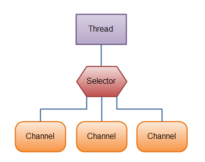
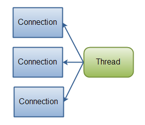
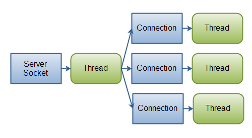
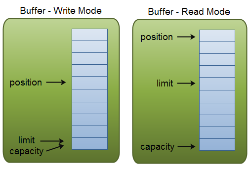

Java NIO 要点总结
来自Jenkov.com的比较完整但是足够brief的一个系列：Java NIO Tutorial，介绍了NIO的主要机制和其中几个重要对象的作用和工作。
1. 三个对象
NIO核心的三个对象：
- Channels
- Buffers
- Selectors
简单讲三个对象：Channel 像IO的流，Buffer就像名字一样，就是个缓存。 数据可以从Channel读到Buffer中，也可以从Buffer 写到Channel中。IO是面向流的，连接到一个源或者目标（对应于输入流或者输出流），如Java IO Overview中说明，比较典型的数据源和目标类型有：Files、Pipes、Network Connections、In-memory Buffers (e.g. arrays)、System.in, System.out, System.error。而Chanel也是联通类似的源或者目标，但是读写都是要经过Buffer。以上比较好理解，参照Java NIO Channel和Java NIO Buffer对应部分说明即可。但是第三个对象Selector则是NIO独有的概念，重点说明下。
2. 选择器Selector
参照**Java NIO Selector**中的一张图

在一个单线程中使用一个Selector处理3个Chann。这恐怕是和标准IO最大的差别，想在IO中我们要同时处理三个连接上的传输，最直接的办法就是创建三个线程分别处理。而在NIO中，使用selector，只需把三个Channel注册到Selector上，调用select()方法（当然Selector还提供了非阻塞的select()方法，见下文），则会一直阻塞到注册时间就像，然后线程就可以处理了。
一个比较典型的代码片段
// 创建一个selector
Selector selector = Selector.open();
//把channel注册到Selector，注册到selector的Channel必须处于非阻塞模式下。即不能注册FileChannel类型到Selector，因为FileChannel不能支持非阻塞模式，而SocketChannel支持
channel.configureBlocking(false);
SelectionKey key = channel.register(selector, SelectionKey.OP_READ);
while(true) {
// 阻塞到至少有一个通道上注册的事件上就绪了Selects a set of keys whose corresponding channels are ready for I/O?operations，返回时就绪的通道数。
int readyChannels = selector.select();
if(readyChannels == 0) continue;
//selet方法返回值表明有一个或更多个通道就绪了，即可访问“已选择键集（selected key set）”中的就绪通道
Set<SelectionKey> selectedKeys = selector.selectedKeys();
Iterator<SelectionKey> keyIterator = selectedKeys.iterator();
while(keyIterator.hasNext()) {
//循环遍历已选择键集中的每个键，检测各个键对应的通道的就绪事件
SelectionKey key = keyIterator.next();
if(key.isAcceptable()) {
// a connection was accepted by a ServerSocketChannel.
} else if (key.isConnectable()) {
// a connection was established with a remote server.
} else if (key.isReadable()) {
// a channel is ready for reading
} else if (key.isWritable()) {
// a channel is ready for writing
}
//Selector不会自己从已选择键集中移除SelectionKey实例。必须在处理完通道时自己移除。下次该通道变成就绪时，Selector会再次将其放入已选择键集中。
keyIterator.remove();
}
}
例子中Selectionkey.OP_READ是channel注册到Selector时，告诉Selector监听这个channel上的.OP_READ类型的事件。A channel that “fires an event” is also said to be “ready” for that event.?
Selector支持四中类型事件，定义在Selectionkey中的四个常量，表示如下”ready“的意思。
- Connect ：channel成功连接到另一个服务器称为“连接就绪”
- Connect ：一个server socket channel准备好接收新进入的连接称为“接收就绪”
- Read：一个有数据可读的通道可以说是“读就绪”
- Write：一个通道可以写数据了，即”写就绪”
public static final int OP_READ = 1 << 0;
public static final int OP_WRITE = 1 << 2;
public static final int OP_CONNECT = 1 << 3;
public static final int OP_ACCEPT = 1 << 4;
根据常量定义也可以猜到，如果需要在一个通道上同时注册多个事件时，可以”位或“操作下即可。
int interestSet = SelectionKey.OP_READ | SelectionKey.OP_WRITE;
注意select方法有三种形式，在J.U.C的AQS中非常常见。
- select()阻塞到至少有一个通道在你注册的事件上就绪了。This method performs a blocking selection operation. It returns only after at least one channel is selected, this selector’s wakeupmethod is invoked, or the current thread is interrupted, whichever comes first.
- select(long timeout) 功能同`select()，最长会阻塞timeout毫秒
- selectNow()不会阻塞，立即返回。This method performs a non-blocking selection operation. If no channels have become selectable since the previous selection operation then this method immediately returns zero.
3.NIO和IO的比较
机制上差别
主要差别如下表
| IO | NIO |
|---|---|
| Stream oriented | Buffer oriented |
| Blocking IO | Non blocking IO |
IO是面向流，NIO是面向缓存的。前面开头讲过了，Java IO流就像生活中的管道，顺序的一个一个往前读，不能前后移动流中的数据(覆水难收不是想说这个意思，但是表达了一点这个意思)。NIO则督导一点数据缓存到Buffer，使用时候可以前后移动，操作比较灵活，见Buffer中position、limit等几种重要概念的说明。
最主要的特种是Java IO中的各种流是阻塞的，即调用read或者write方法时候线程会阻塞直到读完或者写完。NIO是费阻塞模式，线程发送读数据请求后，如果当前没有数据可读则不读取，线程继续做其他事情。当然这种基础是selector模型的支持。
即一个单独的线程来监视多个channel，多个channel注册到一个Selector上，用一个单独的线程来监控并“选择”通道，哪些可以读了，哪些些可以写了。
使用上差别
从机制上差别不难看出，如果同时一个服务端要相应很多连接，每个连接只有很少的数据，则使用NIO比较合适，即一个线程对应对个连接。很多web服务器，像Jetty、Tomacat里面就是使用了NIO，可以比较轻量的处理很多连接。

但如果要维持对个连接，每个连接上一直有很多数据在发生，非常高的带宽，一次发送数据量比较大，则使用单独线程来维护一个连接比较适合。

4. Buffer中的三个属性
说明Buffer中capacity、position和limit三个重要属性的作用。
- capacity：内存块的固定大小，写满了必须清空才能接着写。
- position：表示操作的当前位置。写数据时，初始化为0，写一个则向前移动一个位置，最大capacity-1； 读数据时候，从position位置开始读，读一个向前移动一个位置。
- limit：写模式下表示最多还能向Buffer中写多少；读模式下，limit就是capacity取值。

Buffer的一个重要方法flip()，表示Buffer从写状态切换到读状态。实际操作见代码中，即把limit设置成当前位置，即写操作写的位置，position设置为0，表示从头读，mark标记清除掉。
public final Buffer flip() {
limit = position;
position = 0;
mark = -1;
return this;
}
补充说明下。Buffer的写操作可以是如下两种方式，一种是给buffer中写入数据，另一钟则是从channel中读取数据写到Buffer中。
buf.put(magic); // Prepend header
in.read(buf); // Read data into rest of buffer
而Buffer的读操作对应的也可以是调用Buffer的get方法（abstract class Buffer类中没有规定get、put这样的方法，但是在其众多子类中又类似的方法）或者Buffer中读取写到channel。
buf.put(magic); // Writes the given byte into this buffer at the current position, and then increments the position
in.read(buf); // Read data from chaanel into buffer
buf.get(); // Reads the byte at this buffer'scurrent position, and then increments the position.
out.write(buf); // read data from buffer and Write to channel